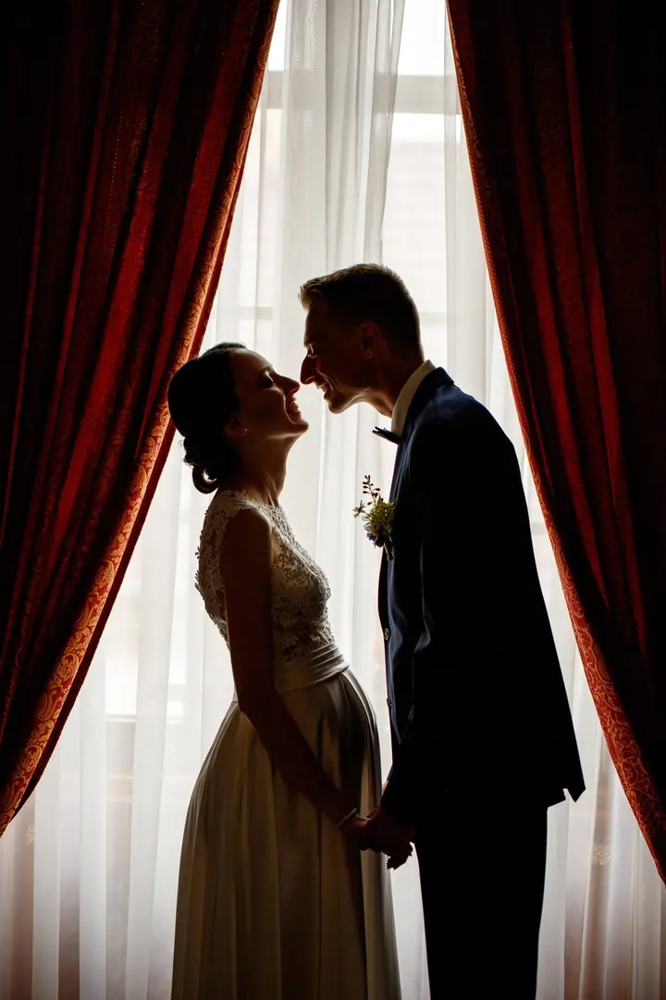
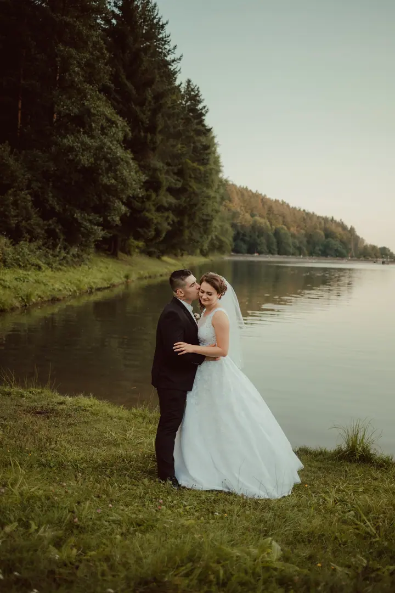
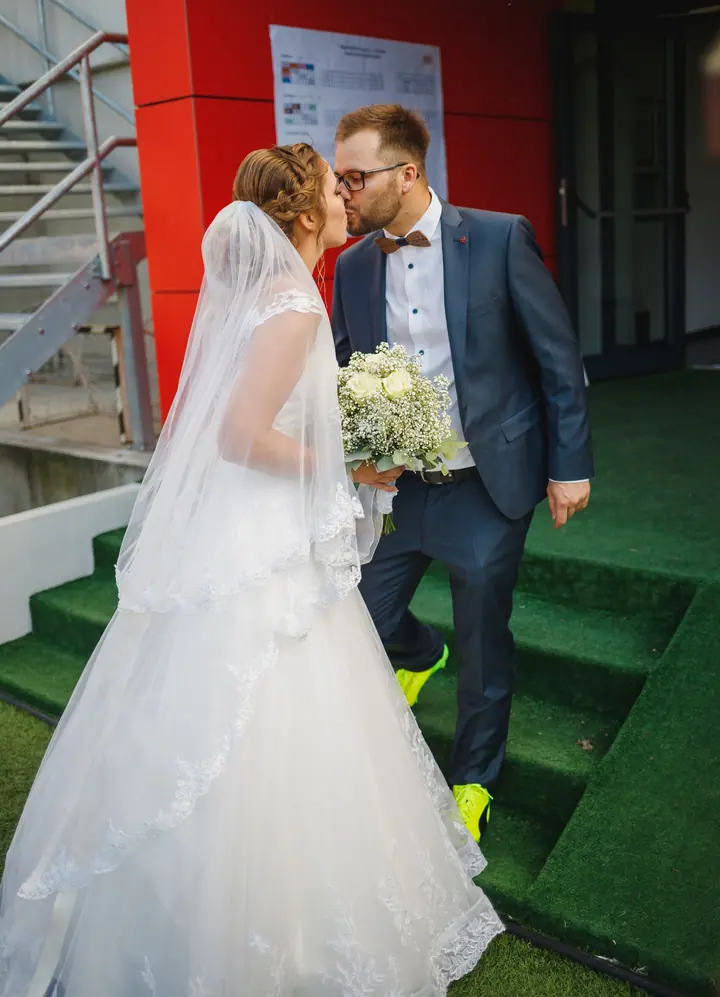
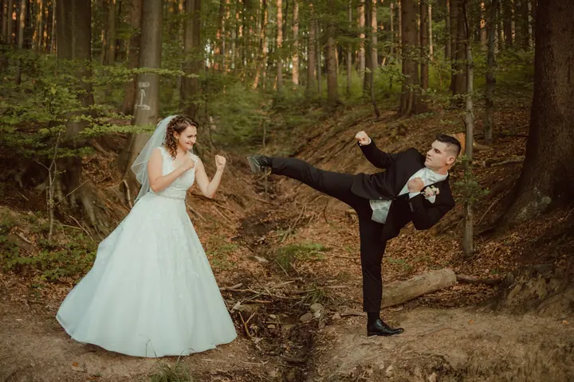

jedna
Svatby
Fotím celý svatební den i svatební portréty novomanželů. Rád na fotky přizvu i vaše čtyřnohé miláčky.

Svatební fotograf · Trnava a okolí, Brno, Jižní Morava

Jmenuji se Ján Kiripolský a fotím svatby, páry a portréty. Pocházím z Bukové u Trnavy a od roku 2019 studuji v Brně, takže mě potkáte na západním Slovensku i na jižní Moravě.
Více o mně
Co fotím
jedna
Fotím celý svatební den i svatební portréty novomanželů. Rád na fotky přizvu i vaše čtyřnohé miláčky.
dvě
Společné focení pro dva venku, u vody, v lese nebo v ulicích města, které máte rádi.
tři
Portréty, při kterých se nemusíte bát objektivu. Focení beru jako příležitost poznat nového člověka.
Na fotky rád přizvu i vaše čtyřnohé miláčky.

Za objektivem
Focení se naplno věnuji od roku 2015, kdy jsem nastoupil na střední školu v Trnavě. Pořád se v něm rád vzdělávám a díky němu poznávám nové lidi, což mě baví snad ze všeho nejvíc.
Nejspíš bych se popsal jako svatební „zvířecí“ fotograf. Na fotkách se u mě často objevují čtyřnozí miláčci a z každého nového záběru mám radost. Pokud máte psa, klidně ho vezměte s sebou.
Nejčastěji fotím v okolí Piešťan, Hlohovce, Trnavy, Sence, Pezinku, Modry, Malacek a Senice. Od roku 2019 studuji na vysoké škole v Brně, a tak na mých novějších fotkách uvidíte i místa z jižní Moravy.
Ján
Ozvěte se e-mailem nebo telefonem a já vám rád odpovím, jestli mám váš termín volný a kolik bude focení stát.
Probereme, co si od fotek slibujete, kde budeme fotit a jestli s vámi přijde i váš čtyřnohý parťák.
Fotím v klidu a s nadhledem. Rád zkusím i hravější nápady, pokud jste pro.
Fotky pečlivě vyberu, upravím a pošlu vám je. Na přesném termínu dodání se domluvíme předem.
Portfolio
Otázky
Nejčastěji na Trnavsku, v okolí Piešťan, Hlohovce, Sence, Pezinku, Modry, Malacek a Senice. Protože studuji v Brně, fotím i na jižní Moravě.
Určitě. Čtyřnohé miláčky mám na fotkách moc rád a často je do záběrů zapojuji.
Cena záleží na typu a délce focení. Napište mi a rád vám pošlu ceník i volné termíny.
Fotím celý svatební den, ale i samotné svatební portréty, páry a portréty mimo svatbu.